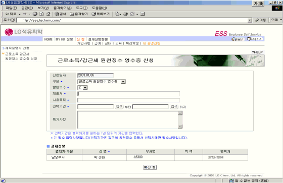

| Ⅱ. 화면사용법 및 유의사항 |
| <그림 1. 근로소득·갑근세 원천징수 영수증 신청 화면> |
|  |
| |
| 1) 구분 : 근로소득 원천징수 영수증 또는 갑근세 원천징수 증명서를 선택한다. |
| 2) 발행부수를 선택한다. |
| 3) 제출처는 근로소득 또는 갑근세 원천징수 영수증을 제출할 곳을 입력합니다. |
| (예 : 우리은행 등) |
| 4) 사용목적은 근로소득 또는 갑근세 원천징수 영수증의 사용용도를 입력합니다. |
| (예 : 대출용, 비자발급용 등) |
| 5) 선택기간 : 근로소득 원천징수 영수증을 선택한 경우 비활성창이다. |
| 갑근세 원천징수 증명서를 선택한 경우 출력 하기를 원하는 1년 단위의 기간을 입력한다. |
| |